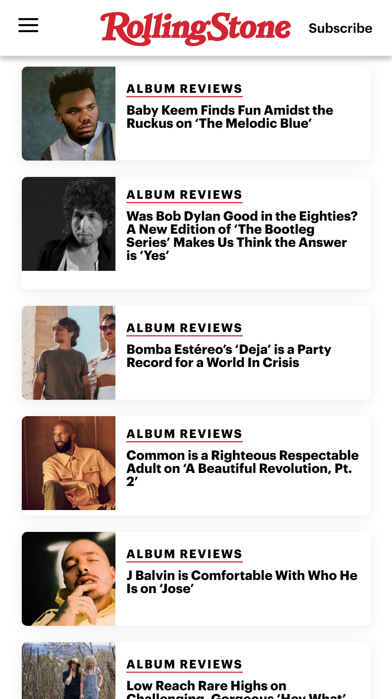
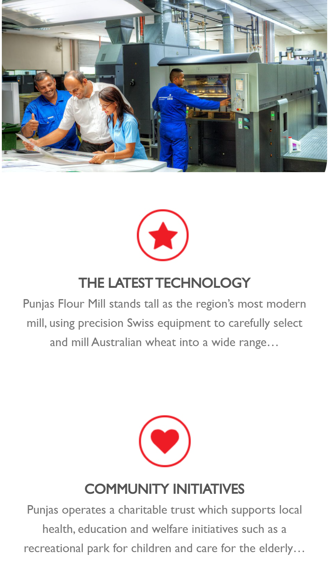

Design Principles Document
Rosa M. Lal
PARC: Proximity
BYU Pathway Worldwide
www.byupathway.orgBYU Pathway Worldwide demonstrates the principle of proximity with the placement of the Apply Now and Request Info buttons. This shows a relationship between the two elements based on how close they are grouped together.
PARC: Repetition
RollingStone
www.rollingstone.com RollingStone uses repetition of the color scheme and card designs in this example creating a clean cohesive look for the website. This also exemplifies a repetition of rhythm as seen in the evenly spaced elements.
White Space and Clean Design
Punjas Limited
punjas.com The excellent use of white space by Punjas allows the user to focus on the message. Also, the minimum use of words gives the design a clean appearance. The design is free of clutter and visually appealing.